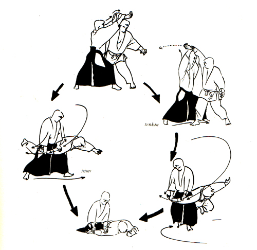
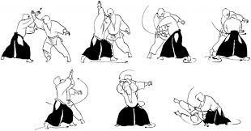
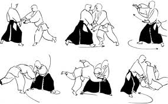
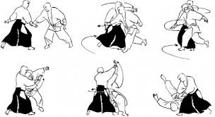
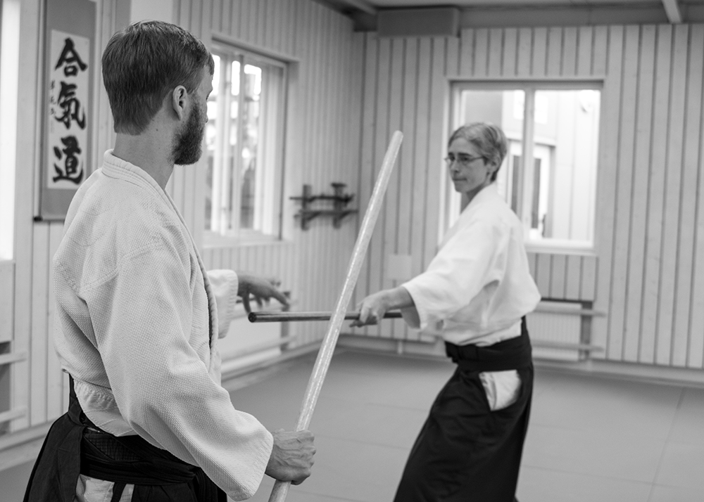
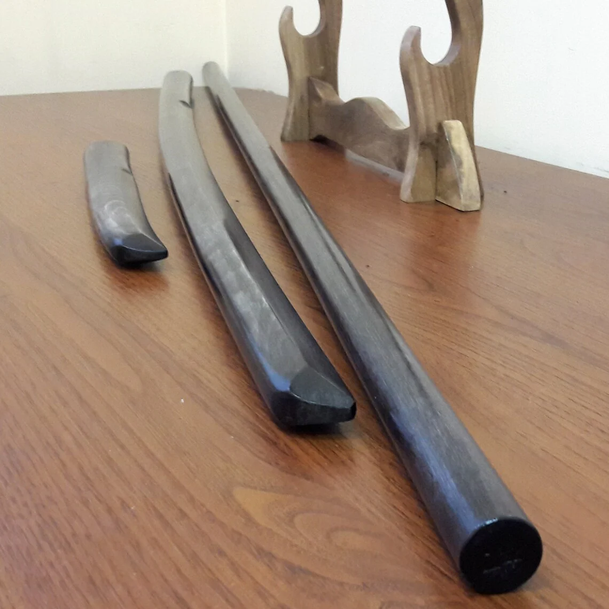
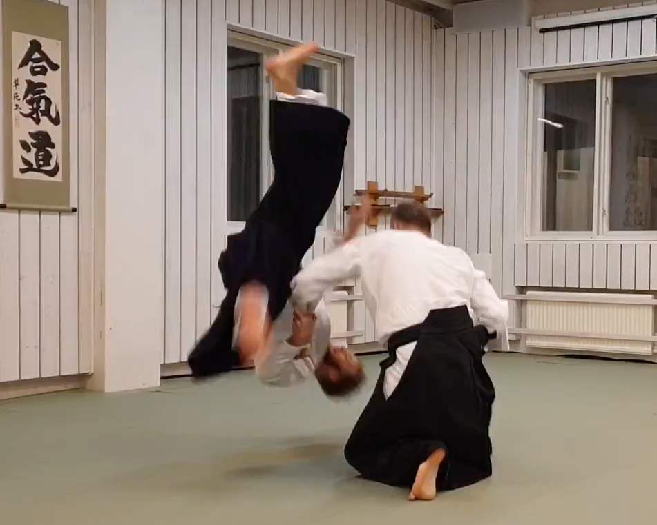

Fundamentos Técnicos y Espíritu del Dojo
Fundamentos Técnicos

Ikkio: El primer principio. Control de codo para inmovilizar al oponente

Shihonage: Proyeccion en las 4 direcciones basada en el corte de espalda

Kotegaeshi: Torción de la muñeca para proyectar de forma fulminante

Iriminage: Técnica de entrada directa que utiliza la inercia del ataque
Espíritu del Dojo

Entrenamiento
Práctica sincera y respetuosa entre compañeros.

Armas (Buki)
Uso del Jo, Bokken y Tanto para entender la distancia.

Técnica
Inmovilizaciones y proyecciones precisas.